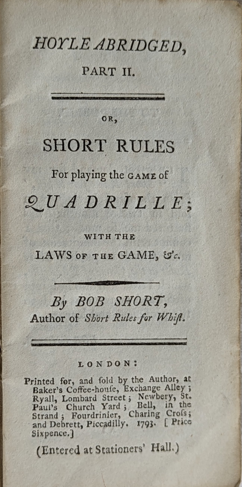

A Descriptive Bibliography of Edmond Hoyle
Copyright © 2014-26 by David Levy
(page updated 2025-01-04)User Guide
Withy.Quadrille.1
Short Rules for Quadrille, printed for, and sold by the Author, first London edition, 1793.
 |
Title: | HOYLE ABRIDGED, | PART II. | [short reverse oxford rule] | OR, | SHORT RULES | For playing the GAME of | QUADRILLE; | WITH THE | LAWS OF THE GAME, &c. | [short decorative rule] | By BOB SHORT, | Author of Short Rules for Whiſt. | [reverse oxford rule] | LONDON: | Printed for, and ſold by the Author, at | Baker's Coffee-houſe, Exchange Alley; | Ryall, Lombard Street; Newbery, St. | Paul's Chruch Yard; Bell, in the | Strand; Fourdrinier, Charing Croſs; | and Debrett, Piccadilly. 1793. {Price | Sixpence.} | (Entered at Stationers' Hall.) |
| Collation: | 12o: A12 [$½ signed; signing A1v as A2]; 12 leaves, pp. [1–3] 4–6 [7] 8–23 [24] |
| Contents: | Signature (Page) Reference | Contents | Signature (Page) Reference | Running Titles |
| A1r (1) | title | |||
| A1v (2) | "To the Public. The great demand for my 'Short Rules for Whist,' seven thousand having been sold in twelve months, has flattered me so much, that I cannot resist the soliciation of many friends to publish Short Rules at the Game of Quadrille, which I trust will also be found useful and convenient both to the proficient and learner. BOB SHORT." | |||
| A2r–A3v (3–6) | ‘DEDICATION. | [double rule] | TO THE MOST HIGH, PUISSANT, | AND UNIVERSALLY ADORED | SPADILLE, SOLE EMPEROR OF | MATTAD, RES, AND ALL THEIR | DEPENDENCIES | [...] Your ſublime Highneſs's | Moſt dutiful, | Moſt Faithful, and | Moſt devoted Admirer, | BOB SHORT. | Baker's Coffee-houſe, | Exchange Alley, | Jan. 1, 1793.’ | |||
| A4r–A7r (7–13) | ‘THE | GAME OF QUADRILLE. | [...]’ | |||
| A7r–A7v (13–14) | ‘[...] | SHORT RULES, | &c. &c. | [...]’ | |||
| A8r–A10v (15–20) | ‘CALCULATIONS. | [...]’ | |||
| A11r–A12r (21–23) | ‘LAWS OF THE GAME. | [...] | FINIS. | [double rule] | [inverted] ⁂ New Editions of my Short | Rules for Whiſt are juſt publiſhed, | price Sixpence; and in large print, | price One Shilling.’ | |||
| A12v (24) | ‘ROBERT WITHY, | STOCK-BROKER, | BEGS leave to inform his Friends | and the Public, | [...]’ |
| Press Figures: | A11v(i):5 |
| Notices: | 1793-01-01 Morning Chronicle: "Quadrille is now the fashion, Bob Short's New Year's Gift. This day is published, price 6d. Large print 1s. Dedicated to Spadille, Hoyle Abridged, Part II, or Short Rules for Playing the Game of Quadrille, with the Laws of the Game &c. as played at all public places. By Bob Short, author of Short Rules at Whist...Where may be had, new editions of his Rules for Whist, price 6d. large print. 1s. Dedicated to the Four Kings, of which upwards of 5000 have been sold in one year." |
| Price: | 6d. (title, advertisement), 1s. large print (advertisement) |
| References: | ESTC T72481, Jessel 1711, Rather 71 |
| Copies Seen: | L [1040.a.1(3)] (ECCO); C-S [795.4S55 CG]; Levy [1757] |
| Notes: | Despite the claim on the title page, the book does not appear in the Stationers' register of books. |